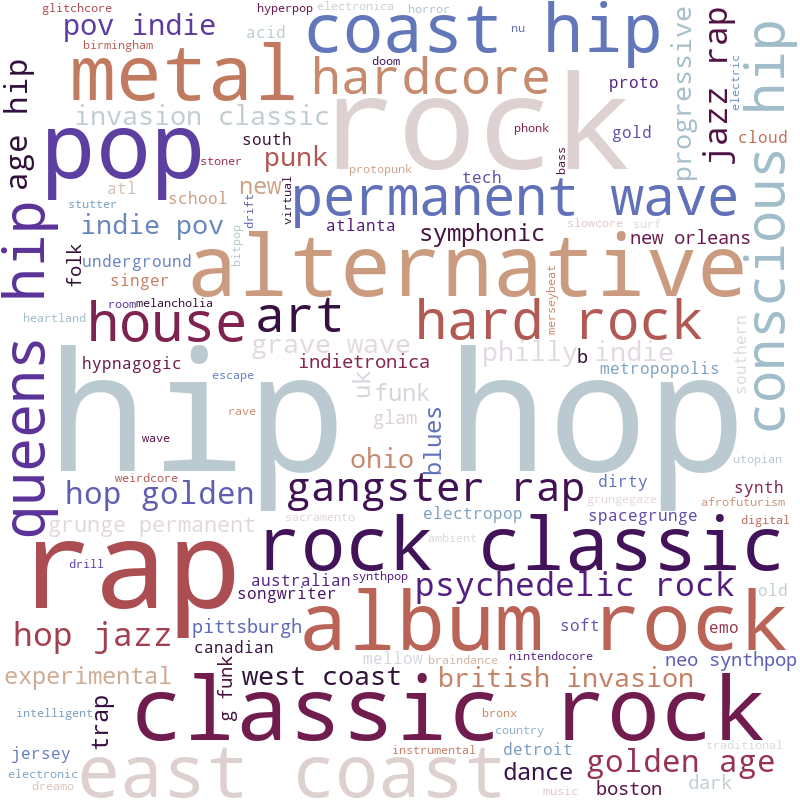

Arielle's Genres

From these static plots, our overall insights are that we can see that we all have very different music tastes. Mimi tends to listen to rock and rap, while Arielle listens to indie music, and Justin listens to metalcore. Overall, there isn’t a particular genre that stands out for anyone other than those, and these word clouds show just how different everyone’s music taste is from each other. It is important to note that the colors for each word cloud do not signify anything other than to differentiate word clouds between users.
Mimi's Genres

Justin's Genres

The key insight gained from this static chart is that Justin listens to the least amount of different genres and the most amount of the same artists, showing the most curated and narrow music taste. This is reinforced in the visualization, because it shows that we do not have any overlapping artists. Another insight from this chart is that no one shares the same top artist in their Top 30 Songs of last year. This is shown by the separated bar chart colors.
The most evident insight shown in the D3 visualization is that Justin has a significantly more energetic music taste compared to Mimi and Arielle. It is also important to note that Mimi and Arielle have very similar energy levels, meaning they could listen to similar styles of music. This is also interesting because although everyone in the project group has similar interests and majors, only Mimi and Arielle grew up in the same state, which could indicate a level of similarity as reflected in their music taste’s energy levels.